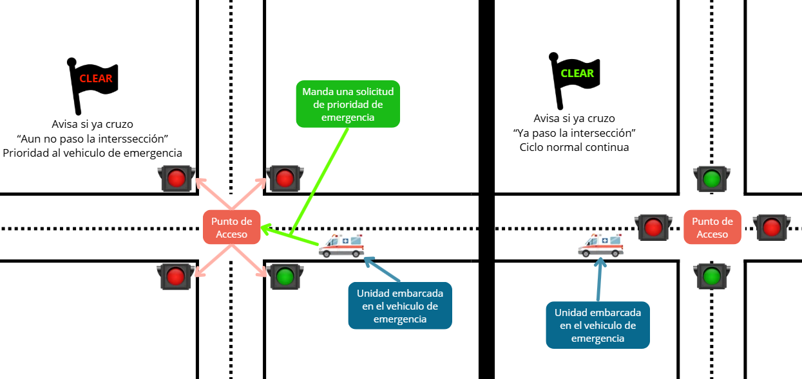
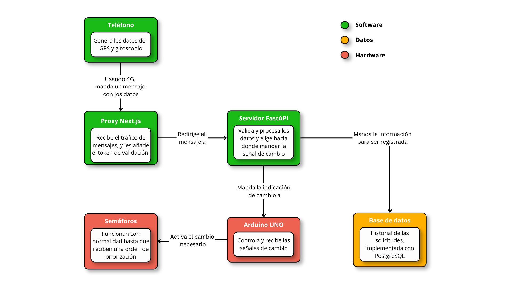

Introducción
El tiempo de respuesta de una ambulancia influye directamente en la supervivencia del paciente. Los semáforos convencionales no detectan la aproximación de una ambulancia ni modifican sus señales, por lo que el conductor depende de la sirena y de la colaboración de otros conductores.
En Alemania, el 30 % de 189 accidentes con vehículos de emergencia (2009-2015) ocurrió al cruzar intersecciones con luz roja (Chen et al., 2024).
Gráfica 1. Tiempo de respuesta de servicios médicos de emergencia. Elaboración propia con datos de NEMSIS (2023), Care Quality Commission (2025) y Secretaría de Salud de Chihuahua (2026).
Antecedentes
- Khan et al. (2024): unidad a bordo con GPS y puntos de acceso en cada cruce; requiere equipo especializado.
- Kavitha et al. (2023): GPS + radio DSRC de corto alcance; evaluación solo cualitativa, en una intersección.
- Siddiqi et al. (2023): Arduino + GSM/SMS con activación manual; ≈ 5 s para cambiar la señal.

Figura 1. Funcionamiento del sistema V2I-VTL. Adaptado de Khan et al. (2024, Fig. 1).
Las propuestas existentes dependen de infraestructura específica o de la intervención del operador.
Justificación
Los retrasos y los cruces con luz roja ponen en riesgo a paramédicos, pacientes y conductores. Automatizar la prioridad de paso aprovechando la red celular que ya existe es una alternativa de bajo costo con potencial para la ciudad de Chihuahua.
Objetivos
General: diseñar y desarrollar un prototipo a escala de semáforos inteligentes con GPS y 4G LTE que detecte automáticamente una ambulancia y le otorgue prioridad de paso, evaluando su funcionamiento y tiempos de respuesta.
- Diseñar la arquitectura de comunicación ambulancia-semáforo.
- Desarrollar el control que detecta la aproximación y cambia las señales.
- Construir una intersección a escala con cuatro semáforos.
- Registrar semáforos, vehículos e historial en una base de datos.
- Medir detección, tiempos y restablecimiento del ciclo.
Metodología
| Capa | Función | Componentes |
|---|---|---|
| Adquisición | Leer posición y rumbo | Teléfono inteligente, página web (GPS y brújula) |
| Transporte | Enviar datos seguros | Datos 4G, VPN privada, HTTPS, token |
| Procesamiento | Validar y decidir | Servidor en Python (FastAPI) |
| Persistencia | Guardar historial | Base de datos PostgreSQL en la nube |
| Actuación | Cambiar el semáforo | Arduino Uno, 12 LED, resistencias de 220 Ω |
Tabla 1. Capas del sistema y materiales. Elaboración propia.

Figura 2. Diagrama de bloques del sistema. Elaboración propia.
Figura 3. Algoritmo de decisión, ejecutado cada segundo. Elaboración propia.
Creatividad e innovación
- Sin equipo especializado: la ambulancia solo necesita un teléfono con navegador; no se instala ninguna aplicación.
- Activación automática por posición y orientación, sin que el paramédico presione nada.
- Usa la red 4G existente: no requiere cámaras con inteligencia artificial (Noor et al., 2026), drones (Chowdhury et al., 2023) ni antenas en cada cruce.
- Un solo servidor puede coordinar varios semáforos y deja historial para analizar su desempeño.
Resultados
(19 de 20 casos de prueba)
Casos de prueba (n = 20)
Exitosos: 19
Fallidos: 1
Tiempo para cambiar la señal
(Siddiqi et al., 2023)Este prototipo
(automático)
Gráficas 2 y 3. Activaciones exitosas y tiempo de cambio de señal. Elaboración propia; el valor de referencia proviene de Siddiqi et al. (2023), medido en condiciones distintas.
| Prueba | Resultado | |
|---|---|---|
| Servidor y base de datos | Responde en modo simulación y en la nube | ✔ |
| Teléfono → servidor | Envío por 4G con VPN y HTTPS | ✔ |
| Orientación y distancia | Activa dentro del rango; fuera no actúa | ✔ |
| Arduino y LED | Transición segura y regreso al ciclo | ✔ |
Tabla 2. Pruebas por capas del prototipo. Elaboración propia.
Conclusiones
- Es posible dar prioridad de paso a una ambulancia con tecnologías accesibles: GPS, 4G LTE, un servidor y un Arduino.
- El semáforo respondió en 1 segundo y de forma automática, con 95 % de activaciones exitosas.
- Una implementación completa podría reducir retrasos, mejorar la seguridad vial y disminuir emisiones y ruido.
- Trabajo futuro: mejorar la precisión, sincronizar cruces consecutivos y probar en un vehículo real.
Referencias bibliográficas
Chen, Y.-Y., Wang, J.-Y., Lo, S.-C., & Sung, W.-T. (2024). An emergency vehicle traffic signal preemption system considering queue spillbacks along routes and negative impacts on non-priority traffic. IET Intelligent Transport Systems, 18(8), 1385–1395.
Chowdhury, A., Kaisar, S., Khoda, M. E., Naha, R., Khoshkholghi, M. A., & Aiash, M. (2023). IoT-based emergency vehicle services in intelligent transportation system. Sensors, 23(11), Artículo 5324.
Kavitha, Y., Satyanarayana, P., & Mirza, S. S. (2023). Sensor based traffic signal pre-emption for emergency vehicles using efficient short-range communication network. Measurement: Sensors, 28, Artículo 100830.
Khan, A., Rahman, S. u., Ullah, F., Khattak, M. I., Bait-Suwailam, M. M., & El Sayed, H. (2024). V2I-VTL: IoT-enabled adaptive traffic light controller and emission reduction at intersection. PeerJ Computer Science, 10, Artículo e2507.
Noor, A., Algrafi, Z., Alharbi, B., Alharbi, G., & Noor, T. H. (2026). ITLMS: An intelligent traffic light management system using edge computing and deep learning. PeerJ Computer Science, 12, Artículo e3858.
Siddiqi, M. H., Alruwaili, M., Tarimer, İ., Karadağ, B. C., Alhwaiti, Y., & Khan, F. (2023). Development of a smart signalization for emergency vehicles. Sensors, 23(10), Artículo 4703.